Lab 3: Likelihood!
NRES 746
Fall 2025
Maximum likelihood and optimization
These next couple weeks are focused on estimating model parameters and confidence intervals using maximum likelihood methods.
Likelihood represents the probability of drawing your particular data set given a fully specified model (e.g., a regression model with a particular vector of coefficients, \(\theta\)):
\[L(\theta) = P(data | \theta)\]
This lab is designed to take two lab sessions to complete.
As with all labs in this course, your answers will either take the form of R functions (submitted as part of an R script) or short written responses submitted via WebCampus.
Please complete all assignments by the due date listed in WebCampus. You can work in groups but please submit the materials individually.
When writing functions, it's often easiest to start off by writing a script, and then when you have everything working properly, wrap the script into a function.
Don't forget to test your functions!
And remember that your final submission should only contain your functions- not any ancillary code you may have used to develop and test your functions.
Please comment your code thoroughly. Don't be afraid of for loops and inefficient coding practices, as long as it gets the job done!
Example: reed frog predation data
Load the reed frog predation data from the Bolker book- it can be found here or loaded from the 'emdbook' package ("ReedfrogPred"). Save this file to your working directory.
This dataset represents predation data for Hyperolius spinigularis (Vonesh and Bolker 2005). You can read more about this data set in the Bolker book.
# Reed frog example ----------------
rfp <- emdbook::ReedfrogPred # load the data using the 'emdbook' package:
head(rfp)## density pred size surv propsurv
## 1 10 no big 9 0.9
## 2 10 no big 10 1.0
## 3 10 no big 7 0.7
## 4 10 no big 10 1.0
## 5 10 no small 9 0.9
## 6 10 no small 9 0.9Because predation on tadpoles is size and density-dependent, we will subset these data to a single size class ('small') and density (10) for all treatments including a predator (this simplifies the problem!). Subset your data now:
# Take a subset of the data
rfp_sub <- subset(rfp, (rfp$pred=='pred')&(rfp$size=="small")&(rfp$density==10))
rfp_sub## density pred size surv propsurv
## 13 10 pred small 7 0.7
## 14 10 pred small 5 0.5
## 15 10 pred small 9 0.9
## 16 10 pred small 9 0.9For each individual, the per-trial probability of being eaten by a predator is a binomial process (i.e., they can survive or die during the interval). Recall that the likelihood that k out of N individuals are eaten as a function of the per capita predation probability p is:
\[Prob(k|p,N) = \binom{N}{k}p^{k}(1-p)^{N-k}\]
Since the observations are independent, the joint likelihood of the whole data set is the product of the likelihood of each individual observation. So, if we have n observations, each with the same total number of tadpoles N, and the number of tadpoles killed in the ith observation is ki, then the likelihood is:
\[\mathcal{L} = \prod_{i=1}^{n}\binom{N}{k_{i}}p^{k_{i}}(1-p)^{N-k_{i}}\]
Here we assume the data are binomially distributed -- the binomial distribution is the natural choice for data that are represented as k 'successes' out of N 'trials. We conventionally work in terms of the log-likelihood (\(\ell\)), which is:
\[\ell = \sum_{i=1}^{n}\left [log\binom{N}{k_i}+k_{i}log(p)+(N-k_{i})log(1-p) \right ]\]
In R we can represent the data likelihood as follows:
rfp_sub$killed <- with(rfp_sub, density-surv) # make column for number killed in each replicate trial
with(rfp_sub, sum(dbinom(killed, 10, prob=0.5, log=TRUE)) ) # expression of data likelihood(log scale)## [1] -12.8038There is only one parameter ("unknown") in this calculation: p.
We know how many individuals we started with (N = 10 for each trial) and how many were killed/eaten in each trial (k = 3, 5, 1, and 1). So we want to solve for the most likely value of p given our observations of N and the number of tadpoles eaten.
In essence we do this by picking a possible value of p (which can only range from 0 to 1), calculating the log-likelihood using the equation above, picking another value of p, completing the equation, etc. until we exhaust all possible values of p and identify the one having the highest log-likelihood.
Of course R has useful built in functions to help us optimize the likelihood function!
The "dbinom()" function calculates the likelihood for a binomially distributed response variable.
Here, the response variable is the number of tadpoles eaten, and we are modeling the probability \(p\) of being eaten by a predator!
Given our observed k (number killed), and N = 10 for each trial, what is the likelihood of our data given that that p is 0.5?
L = dbinom(rfp_sub$killed,size=10,prob=0.5) # evaluate data likelihood with p=0.5
L## [1] 0.117187500 0.246093750 0.009765625 0.009765625What is the likelihood of observing all 4 of our outcomes, assuming independent replicates?
prod(L) # joint data likelihood## [1] 2.750312e-06The joint likelihood value gets smaller and smaller each time we add more data (can you see why?), and can become very tiny very quickly. This is one of the reasons we prefer to work with log-likelihoods (which yield larger numbers and have very nice mathematical properties).
Taking the log of a value between 0 and 1 (like a probability mass) yields a negative number, which is why we often see that our log likelihood values are negative.
We can build on these ideas to estimate the likelihood over the entire possible parameter space (probability of being eaten- which can range from 0 to 1).
First we generate a sequence of plausible values for our free parameter, \(p_{eaten}\).
p_seq <- seq(0.01, 1, length=100) # prepare for visualizing the likelihood across parameter spaceFor every value of p we will calculate the binomial probability of the data.
Lik <- sapply(p_seq, function(t) prod(dbinom(rfp_sub$killed,10,prob=t)) )
plot(Lik~p_seq,lty="solid",type="l", xlab="Predation Probability", ylab="Likelihood")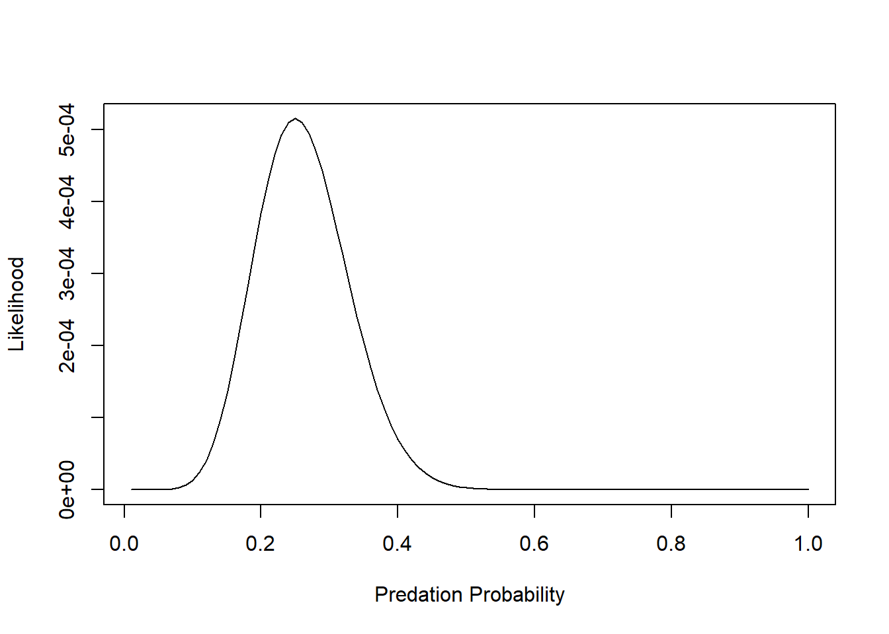
Q: is this a probability distribution?Let's look at the log-likelihood:
# plot out the log-likelihood
LogLik <- sapply(p_seq, function(t) sum(dbinom(rfp_sub$killed,10,prob=t,log=T)) )
plot(LogLik~p_seq,lty="solid",type="l", xlab="Predation Probability", ylab="Log Likelihood")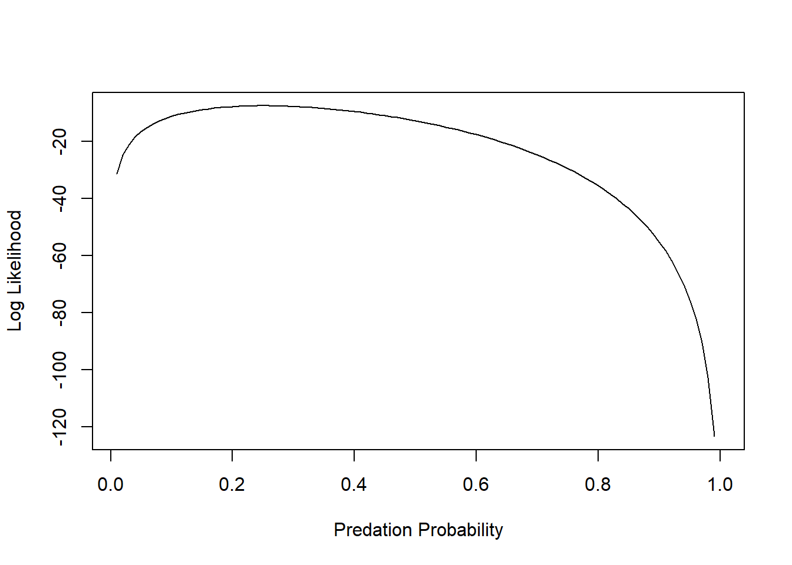
The maximum likelihood estimate (MLE) is the parameter value that maximizes the likelihood function.
p_seq[which.max(LogLik)] # MLE for probability of predation## [1] 0.25And we can add an "abline()" to indicate the maximum Log-Likelihood estimate:
plot(LogLik~p_seq,lty="solid",type="l", xlab="Predation Probability", ylab="Log Likelihood")
abline(v=0.25,lwd=3)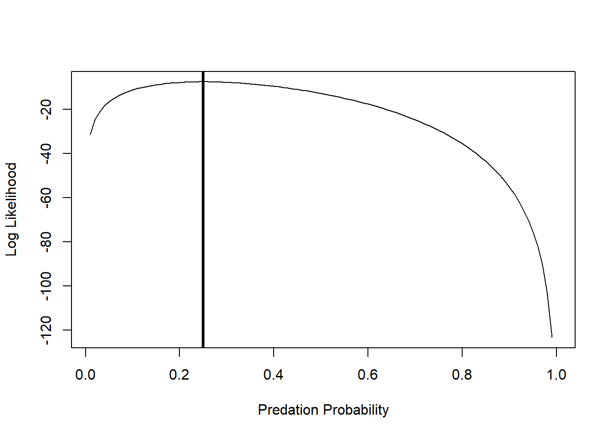
Alternatively, we can use the optim() or mle2() functions to find the maximum likelihood estimate.
Although we want the maximum likelihood estimate, in practice we generally minimize the negative log-likelihood. To do this, we first write a function to calculate the negative log-likelihood function:
# Write a likelihood function
binomNLL1 <- function(p) {
-sum(dbinom(rfp_sub$killed, size=10, prob=p, log=TRUE))
}As we did in class, you can use the 'optim()' function to minimize your negative log-likelihood function ('binomNLL1()') given a vector of starting parameters and your data. The starting parameters need not be accurate, but do need to be reasonable for the function to work, that’s why we spent time in class eyeballing curves (also read the Bolker book for a discussion of the 'method of moments', which can help you get reasonable starting values!). Given that there is only one estimable parameter, p, in the binomial function, you only need to provide a starting estimate for it. Calculate the negative log-likelihood:
# use "optim()" to find the MLE
opt1 <- optim(fn=binomNLL1, par = c(p=0.5), method = "BFGS") # use "optim()" to estimate the parameter value that maximizes the likelihood function You may get several warning messages, can you think why? opt1 returns a list that stores information about your optimization process.
opt1 # check out the results of "optim()"## $par
## p
## 0.2500002
##
## $value
## [1] 7.571315
##
## $counts
## function gradient
## 17 7
##
## $convergence
## [1] 0
##
## $message
## NULLMLE = opt1$par
MaxLik = opt1$valueThe important bits are the parameter estimate and the maximum likelihood value.
But the first thing to check is whether or not the optimizer achieved convergence.
opt1$convergence## [1] 0Here a value of 0 means convergence has been achieved, a value of 1 means the process failed to converge. There is more info about convergence and alternative optimization options in Chapter 7 of the Bolker book.
This numerically computed answer is (almost exactly) equal to the theoretical answer of 0.25.
Plot your observed outcomes against your predictions under the maximum likelihood model:
hist(rfp_sub$killed,xlim=c(0,10),freq=F,main="",xlab="Number of tadpoles killed")
curve(dbinom(x,prob=MLE,size=10),add=T,from=0,to=10,n=11,lwd=2, col="darkgreen")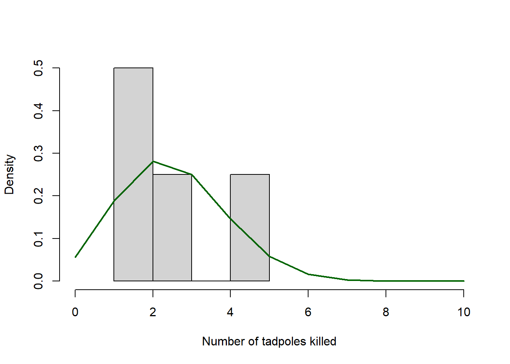
Note that "freq=F" scales the y-axis of a histogram to "density", which allows us to overlay probability density functions.
Exercise 3.1: building a custom likelihood function
In this exercise you will develop and use a likelihood function for the following scenario: you are a frog biologist studying a rare species of a wetland-obligate frog species. You visit three known-occupied wetland sites ten (10) times and for each site you record the number of visits for which your target species is detected (at least one call within a 5 minute period). Your data are as follows: 3,2 and 6 detections for each of the three sites respectively.
Exercise 3.1a.
Write a likelihood function called "NLL_frogOccupancy()" for computing the negative log-likelihood for the above scenario. Your likelihood function should compute the negative log-likelihood of these data: [3,2 and 6 detections for sites 1, 2, and 3 respectively] for any detection probability \(p\), assuming that all sites are continuously occupied. You should assume for now that all sites have the same detection probability.
- input:
- p = a single number specifying a proposed value (initial value) for the parameter "p" (probability of detection for a single visit -- which happens to be the only free parameter in this model)
- suggested algorithm:
- up to you! (HINT: use binomial distribution) (NOTE: do not use 'optim()' here: you are just asked to compute the likelihood at any specified parameter (input argument "p"), not to find the maximum likelihood estimate)
- return:
- the negative log likelihood of your data (a single number)
Include your function in your submitted r script!
And test your function! For example:
NLL_frogOccupancy(p=0.5) # test your function## [1] 6.853154Exercise 3.1b.
On WebCampus please respond briefly to the following questions:
- What is the approximate maximum likelihood estimate for the p (detection probability) parameter? How did you use your likelihood function to get your answer (briefly)?
- Using the "rule of 2", what is the approximate 95% confidence interval for the p (probability of detection) parameter.
Exercise 3.2: Adding a Deterministic Relationship
So we’ve looked at how to obtain the likelihood given a stochastic model (the binomial distribution), but now we can consider more interesting questions -- like the effects of covariates on our process of interest.
Recall that we subset our data above because we expected survival to be (in part) density-dependent. Here we’ll consider how to model the probability of tadpoles being eaten as a function of the initial density of tadpoles in the population. Specifically, the response represents the number of tadpoles eaten by the predator (dragonfly larvae) over the 2-week experiment. The predictor variable is the initial density of tadpoles in each mesocosm.
First, examine the first few lines:
# 3.2a ------------------
rffr <- emdbook::ReedfrogFuncresp # from Bolker's "emdbook" package
# ?Reedfrog # learn more about this dataset
head(rffr)## Initial Killed
## 1 5 1
## 2 5 2
## 3 10 5
## 4 10 6
## 5 15 10
## 6 15 9Let’s look at the distribution of the data (probability of being killed).
hist(rffr$Killed/rffr$Initial)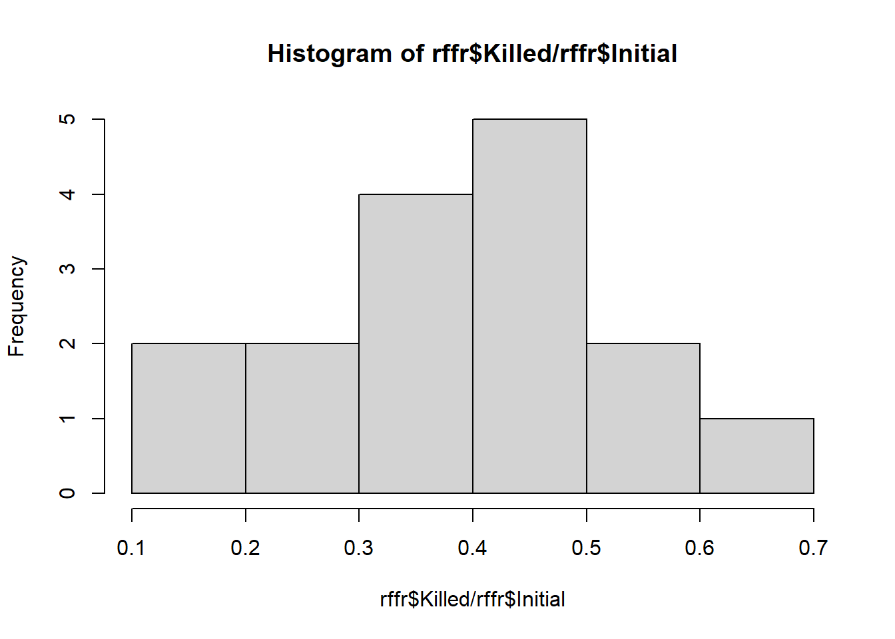
Based on what we know about the data, let's use a binomial distribution to describe the observed number of tadpoles killed.
Plot the number of tadpoles killed as a function of the initial density (e.g., using ggplot()) to see what sort of deterministic function would describe the pattern.
It looks like it could be linear, but we know that predators become handling-limited (saturated) at high prey densities.
On page 182 Bolker indicates that if predation rate= \(aN/(1+ahN)\) (saturation curve, known in ecology as a Holling Type II functional response), this means that the per-capita predation rate of tadpoles decreases with tadpole density hyperbolically:
\[PredRate = (a/(1 + ahN))\]
We’ll use this deterministic function for our data.
First, let’s see what that saturation curve would look like over our data points with an initial guess at the parameters (we always need an initial guess to get our optimization algorithm started).
Recall that the a parameter of this hyperbolic function indicates the initial slope, which we’ll guess to be around 0.5, and the h parameter indicates 1/asymptote, which we fiddled around with to match the data (so try 1/80).
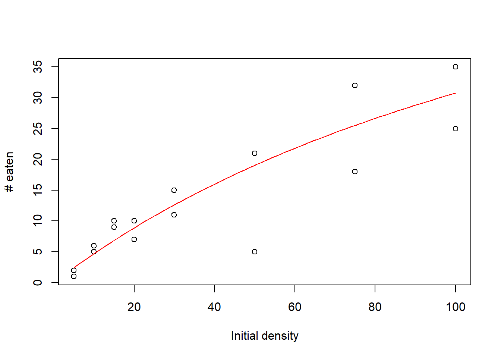
This looks pretty good, but we want to actually fit the line to the data instead of making guesses, and we’ll use maximum likelihood to do that.
Just like before, we’ll write a negative log likelihood function, but this time we’ll incorporate the deterministic model!
Exercise 3.2a.
Write a function called "binomNLL2()" for computing the data likelihood for this model. This likelihood function should reflect that the data are drawn from a binomial distribution (either killed or not), and that the probability of predation (the number killed divided by the initial number) is explained by the Holling type II equation.
- input:
- params = named vector of initial values for the params to estimate (length 2, with elements named 'a' and 'h' from the Holling type II functional response- in that order)
- suggested algorithm:
- up to you! Make sure you use the Holling type II function to model the number killed at each density. Use the 'dbinom()' function to represent the stochastic process that generated these data. Note that the probability of being eaten (p parameter in the binomial distribution) can be computed as the expected number killed divided by the total initial density.
- return:
- the negative log-likelihood of the data under this model
You can test your function using something like the following:
binomNLL2(c(a=0.4,h=1/200))## [1] 49.51338Now we can find the parameter values that best describe these data using 'optim()'. We’ll use the same initial values for a and h that we used to plot the curve. N is the initial number of tadpoles, and k is the number of tadpoles killed.
opt2 <- optim(c(a=0.5,h=(1/80)), binomNLL2) #use default simplex algorithm
MLE = opt2$par
MaxLik = opt2$valueThe results are not that different from our starting values, so we made a good guess!
Let's visualize the results!
plot(rffr$Killed~rffr$Initial, xlab="Initial density",ylab="# eaten")
curve(Holl2(x, a=MLE["a"], h=MLE["h"]), add=TRUE,col="red")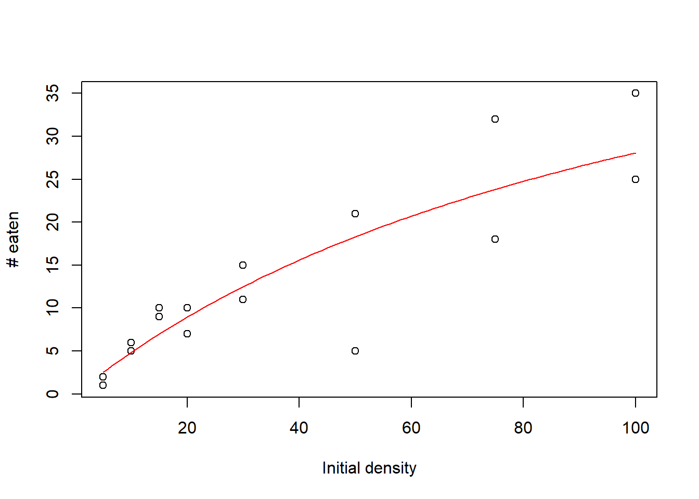
Exercise 3.2b.
Write a function called "Rffuncresp()" for plotting the goodness-of-fit for this model.
- input:
- params = named vector containing the MLE for the params in this model (length 2: a and h from the Holling type II functional response- in that order, named "a" and "h", respectively)
- data = a data frame of 2 columns and one row per observation. The first column should represent the initial prey densities, and the second column should represent the number eaten by the predator over the 2-week experiment.
- params = named vector containing the MLE for the params in this model (length 2: a and h from the Holling type II functional response- in that order, named "a" and "h", respectively)
- suggested algorithm:
- Plot the observed number killed (y axis) vs the initial densities
- Overlay a line to visualize the expected number killed based on the MLE parameters.
- Finally, visualize "plug-in prediction intervals" around your MLE line to make a plot like Figure 6.5a in the Bolker book. You can use "qbinom()" to define the 90% quantiles of the binomial distribution for every point along your curve (see below).
- Plot the observed number killed (y axis) vs the initial densities
- return:
- a data frame with 4 columns: The first column should represent a vector of initial densities that span the range of values in the experiment the second column should represent the expected number killed based on the MLE, the third and fourth columns should represent the lower and upper bounds of the 90% 'plug-in' confidence interval, respectively.
Include your function in your submitted r script!
You can test the function using something like this:
Rffuncresp(params=MLE,data=rffr)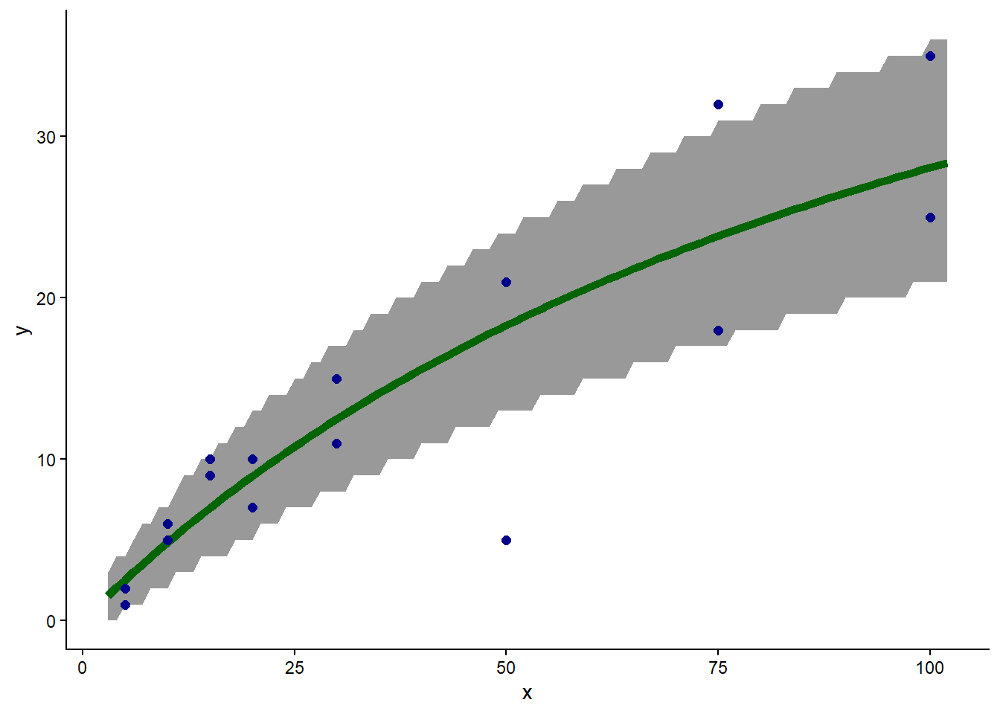
## x y lwr upr
## 1 3 1.537532 0 3
## 2 4 2.032743 0 4
## 3 5 2.519665 1 4
## 4 6 2.998505 1 5
## 5 7 3.469463 1 6
## 6 8 3.932732 2 6
## 7 9 4.388498 2 7
## 8 10 4.836943 2 7
## 9 11 5.278241 3 8
## 10 12 5.712562 3 9
## 11 13 6.140069 3 9
## 12 14 6.560923 4 10
## 13 15 6.975277 4 10
## 14 16 7.383281 4 11
## 15 17 7.785079 4 11
## 16 18 8.180812 5 12
## 17 19 8.570617 5 12
## 18 20 8.954625 5 13
## 19 21 9.332964 6 13
## 20 22 9.705761 6 14
## 21 23 10.073134 6 14
## 22 24 10.435203 7 14
## 23 25 10.792081 7 15
## 24 26 11.143878 7 15
## 25 27 11.490703 7 16
## 26 28 11.832660 8 16
## 27 29 12.169851 8 17
## 28 30 12.502375 8 17
## 29 31 12.830328 8 17
## 30 32 13.153804 9 18
## 31 33 13.472894 9 18
## 32 34 13.787686 9 19
## 33 35 14.098267 9 19
## 34 36 14.404720 10 19
## 35 37 14.707128 10 20
## 36 38 15.005569 10 20
## 37 39 15.300122 10 20
## 38 40 15.590863 11 21
## 39 41 15.877863 11 21
## 40 42 16.161196 11 21
## 41 43 16.440931 11 22
## 42 44 16.717136 12 22
## 43 45 16.989877 12 22
## 44 46 17.259220 12 23
## 45 47 17.525227 12 23
## 46 48 17.787961 12 23
## 47 49 18.047480 13 24
## 48 50 18.303844 13 24
## 49 51 18.557110 13 24
## 50 52 18.807334 13 25
## 51 53 19.054570 13 25
## 52 54 19.298871 14 25
## 53 55 19.540290 14 25
## 54 56 19.778877 14 26
## 55 57 20.014681 14 26
## 56 58 20.247752 14 26
## 57 59 20.478135 15 27
## 58 60 20.705878 15 27
## 59 61 20.931026 15 27
## 60 62 21.153622 15 27
## 61 63 21.373711 15 28
## 62 64 21.591333 15 28
## 63 65 21.806530 16 28
## 64 66 22.019343 16 28
## 65 67 22.229811 16 29
## 66 68 22.437973 16 29
## 67 69 22.643865 16 29
## 68 70 22.847526 17 29
## 69 71 23.048990 17 30
## 70 72 23.248295 17 30
## 71 73 23.445473 17 30
## 72 74 23.640559 17 30
## 73 75 23.833586 17 31
## 74 76 24.024587 17 31
## 75 77 24.213593 18 31
## 76 78 24.400635 18 31
## 77 79 24.585744 18 31
## 78 80 24.768949 18 32
## 79 81 24.950281 18 32
## 80 82 25.129766 18 32
## 81 83 25.307434 19 32
## 82 84 25.483312 19 33
## 83 85 25.657426 19 33
## 84 86 25.829804 19 33
## 85 87 26.000471 19 33
## 86 88 26.169452 19 33
## 87 89 26.336773 19 34
## 88 90 26.502457 20 34
## 89 91 26.666528 20 34
## 90 92 26.829011 20 34
## 91 93 26.989927 20 34
## 92 94 27.149299 20 34
## 93 95 27.307151 20 35
## 94 96 27.463502 20 35
## 95 97 27.618375 20 35
## 96 98 27.771790 21 35
## 97 99 27.923768 21 35
## 98 100 28.074330 21 36
## 99 101 28.223493 21 36
## 100 102 28.371279 21 36NOTE: the "prediction interval" you are asked to generate here is sometimes called a "plug-in" prediction interval, and is a quick and dirty way to assess model goodness-of-fit. You just take the best-fit model (with parameter values at their MLE values) and use the quantiles of the stochastic process (here, the binomial distribution) to define the range of data that would generally be produced under this model.
NOTE: For this exercise, you can use the ratio of the tadpoles killed versus the initial tadpole density values to get a probability (probability of being killed), which you can then use as an input parameter for the binomial distribution. For example:
# how to generate 'plug-in' prediction intervals
xvec <- seq(40,80,5)
yvec <- 0.5/(1+0.5*0.015*xvec) * xvec
upper<-qbinom(0.975,prob=yvec/xvec, size=xvec)
lower<-qbinom(0.025,prob=yvec/xvec, size=xvec)
upper
lowerExercise 3.2c.
On WebCampus, respond briefly to the following question:
Bolker calls the prediction interval you generated above a plug-in prediction interval. In what way(s) is this interval different than a true prediction interval? Would you feel comfortable reporting a 'plug-in' prediction interval in a scientific publication, or to stakeholders interested in your model results?
Review of the MLE process
Step 1. Identify the response and explanatory variables (e.g., Predation probability and Initial Population Size). Just stating what the response and explanatory variables are will help you start modeling.
Step 2. Determine one or more candidate stochastic process(es) that may govern variability among observations in your system (e.g., error is Binomially distributed). In the tadpole case, the stochastic distribution was easy to identify because the data were in the form of successes in a finite set of trials (which yields a binomial distribution under independence assumptions). Other times it may not be so clear what the best distribution is, and looking at the histogram and plotting different distributions over the top will be helpful.
Step 3. Specify the deterministic function -- e.g., a mathematical function that governs the relationship between a predictor variable and the mean response (e.g., Holling type II). Here, we chose this function mechanistically -- we expect predator functional response to saturate with increasing prey density.
Step 4. Write a function for expressing the negative log-likelihood of the data given our deterministic expectations and the stochastic distribution. Our negative log likelihood function in the tadpole functional response example combined the stochastic and deterministic elements together by having the stochastic parameter (in this case the binomial probability, p) be dependent upon the deterministic parameters.
Step 5. Make a guess for the initial parameters (e.g., a=0.5, h=1/80). You need to have an initial guess at the parameters to make 'optim()' work, and we plotted the Holling curve to make our guess. Sometimes you will also need to make a guess at the parameters for the stochastic distribution. In these cases, the method of moments is often a good and simple option for finding the parameters of non-normal probability distributions (see Bolker book for details).
Step 6. Estimate the best-fit parameters using maximum likelihood. We used optim() to search through all possible value combinations of parameters a and h to estimates for those parameters that correspond to the minimum negative log-likelihood.
Step 7. Add confidence or prediction intervals around your estimates to represent uncertainty. We calculated some plug-in estimates to put pseudo-prediction intervals around our estimates based on the stochastic distribution.
Exercise 3.3: Likelihood and Confidence Intervals
Let's continue the myxomatosis virus titer example from the optimization lecture. The difference is that this time we'll model a deterministic process (change in viral loads over time) in addition to the stochastic process. Our goal is to fit a model to data on viral titers through time for the viruses that are grade 1 (highest virulence). Biological common sense, and data from other titer levels, tells us to expect titer levels to start at zero, increase over time to a peak, and then to decline. Given those expectations, we’ll fit a Ricker model to these data, following Bolker’s example and extending it just a bit.
Our goals are to:
- Find the maximum likelihood estimates of the parameters of the Ricker model fit to the myxomatosis data.
- Visualize the fit of this model to the data by:
- Plotting the data
- Adding the predicted Ricker curve
- Adding plug-in confidence intervals
- Computing confidence intervals for MLE params
- Computing confidence intervals for predictions
You can add the data from the 'emdbook' package. Select just the grade 1 titers:
# Exercise 3.3a -----------
library(emdbook)
data(MyxoTiter_sum) # load the data
# head(MyxoTiter_sum)
myxdat <- subset(MyxoTiter_sum, grade==1) # select just the most virulent strain
plot(myxdat$titer~myxdat$day,xlim=c(0,10)) # visualize the relationship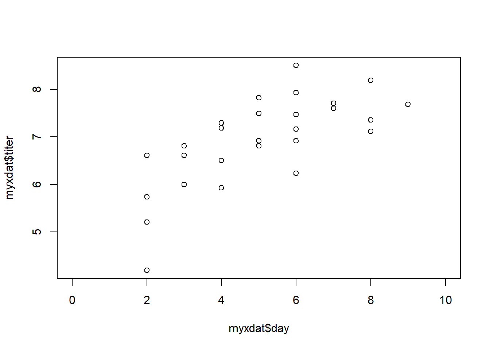
Exercise 3.3a.
Fit a Ricker model to the myxomatosis data -- that is, use a Ricker deterministic equation to model the expected (mean) virus titer as a function of days since infection (see below for step-by step instructions).
Write a function called "NLL_myxRicker()" for computing the data likelihood and plotting the goodness-of-fit for this model.
- input:
- params = named vector of initial values for the params to estimate (length 3: a and b params from the Ricker model [see below], and the shape parameter of the Gamma distribution)(names should be "a","b", and "shape")
- suggested algorithm:
- Compute the deterministic function: use a Ricker deterministic equation to model the mean virus titer as a function of days since infection
- Compute the "scale" parameter of the Gamma distribution for each observation as a function of (1) mean virus titer and (2) the "shape" parameter of the Gamma distribution, which is held constant across observations (scale = mean/shape) [NOTE: the variance and the mean of the Gamma distribution are dependent- so we can't simply model the expected value and the noise separately! See below for more details]
- Compute the sum of the negative log-likelihoods of all observations (use the "dgamma()" function)
- NOTE: you can assume the existence of the "myxdat" data object in the workspace, exactly as in the above code block.
- return:
- the negative of the sum of the log-likelihoods of all observations (a single number)
This task (develop likelihood function) can be broken down into a few steps, just like we did above!
Our question is: how does a virus titer change in rabbits as a function of time since infection? This is almost exactly the same problem as we just did (above), but we’re using different distributions and functions.
Step 1. Identify the response and explanatory variables. The response is the virus titer and the explanatory variable is the days since infection.
Step 2. Determine the stochastic distribution.
Start by plotting the histogram of the response variable. Bolker suggests a gamma distribution – does it look like a gamma would work? Write down the parameters for the gamma distribution (page 133). (For the gamma distribution, use with the shape and scale parameters (not the rate)).
Step 3. Specify the deterministic function.
Plot the data points (hint: look at figure 6.5b). Bolker suggests the Ricker curve – does it look like the Ricker curve would work? Write down the equation and parameters for the Ricker curve (page 94).
Step 4. Specify the likelihood of the data given our deterministic expectations and the stochastic distribution. Take a moment to think how the parameters of the stochastic distribution are determined by the parameters of the deterministic function. For the gamma distribution, the mean is shape * scale (equivalently, shape / rate; page 133). Following Bolker (p. 245-246), we treat the shape parameter as a constant that describes how variable the titers are around the mean, and let the scale change with the mean: scale = mean / shape. So the Ricker model gives the mean, the shape parameter is estimated along with the Ricker parameters, and the scale for each observation is computed from the two. What parameters do you need your (negative) log-likelihood function to estimate? Write out your negative log-likelihood function to solve for the likelihood.
ASIDE: the mean and variance of the gamma distribution are inter-related: the shape parameter can be specified as: \(\frac{mean^2}{var}\) and the rate parameter can be specified as \(\frac{mean}{var}\)! Holding the shape constant means the coefficient of variation (\(\frac{sd}{mean} = \frac{1}{\sqrt{shape}}\)) is the same at every mean, so the spread of the titers grows in proportion to the mean.
Include your function in your submitted r script!
You can test your function using something like this:
NLL_myxRicker(params=c(a=4,b=0.2,shape=50)) # test the function## [1] 34.4592We can then optimize our likelihood function using 'optim()'. This takes us through the next couple steps in the maximum likelihood process outlined above.
Step 5. Make a guess for the initial parameters. We need initial parameters to put into "optim()". Remember that the Ricker curve parameters can be estimated based on the initial slope and maximum (see pg. 95). Try plotting the curve over the points to get an approximate fit. There really isn’t any easier way to get there than trial and error for the deterministic function.
Step 6. Estimate the best fit parameters using maximum likelihood.
Now use 'optim()' to get your maximum likelihood parameter estimates.
temp <- optim(NLL_myxRicker,par = c(a=1,b=0.2,shape=50))
MLE = temp$par
MinNLL = temp$value
MLE## a b shape
## 3.5614933 0.1713346 90.6790545Exercise 3.3b.
Write a function called "predict_myxRicker1()" for computing the maximum likelihood estimates and plotting the goodness-of-fit for this model.
- input:
- mle = named vector of MLE values for the model params (length 3: a and b params from the Ricker model [see below], and the shape parameter of the Gamma distribution) (named "a", "b", and "shape", in that order)
- suggested algorithm:
- make a data frame with a column "x" spanning the range of the time-since-infection (predictor variable, in days). [I suggest making this vector at least 100 elements]
- add a column with the predictions from the Ricker model based on the MLE parameters (just the Ricker parameters) across the range of times since exposure.
- add columns to denote the lower and upper bounds of the plug-in prediction interval around your MLE predictions. Hint: use "qgamma()" to define the 95% quantiles of the Gamma distribution for every point along your curve (see below).
- Use ggplot to plot the observed virus titer (y axis) vs the days since infection (x axis).
- Overlay a line to visualize your predictions from the Ricker model
- Finally, visualize "plug-in prediction intervals" around your MLE line to make a plot similar to Figure 6.5a in the Bolker book.
- return:
- df: a data frame with 4 columns:
- x, representing a vector ranging across the time span of the experiment (in units of days)
- mean, representing the expected virus titer under the MLE parameters
- lwr, representing the lower bound of the plug-in prediction interval
- upr, representing the upper bound of the plug-in prediciton interval
- df: a data frame with 4 columns:
NOTE: you can assume (1) that a function "NLL_myxRicker()" is available in the global environment and that the "myxdat" data object is also available for use.
To complete this exercise will involve going through the final step (7) in the process outlined above:
Step 7. Add confidence/prediction intervals around your estimates
After your run of 'optim()' (did you achieve convergence?), plot your fitted Ricker curve to your data. Revisit the earlier prediction interval code to add plug-in prediction intervals around your predicted curve based on gamma distributed errors (should resemble Figure 6.5b on page 184 of text).
NOTE: You can use the "qgamma()" function to build your plug-in intervals!
# Plug-in prediction intervals!
upper<-qgamma(0.975,shape=?, scale=?) # remember that the mean of the gamma distribution is shape*scale
lower<-qgamma(0.025,shape=?, scale=?)Include your function in your submitted r script!
And as always, make sure to test your function code using something like this:
predict_myxRicker1(mle=MLE) # test the function
## x mean lwr upr
## 1 1.000000 3.000699 2.414999 3.649034
## 2 1.090909 3.222897 2.593827 3.919241
## 3 1.181818 3.437511 2.766551 4.180224
## 4 1.272727 3.644721 2.933315 4.432204
## 5 1.363636 3.844704 3.094265 4.675397
## 6 1.454545 4.037636 3.249538 4.910013
## 7 1.545455 4.223685 3.399273 5.136261
## 8 1.636364 4.403020 3.543604 5.354342
## 9 1.727273 4.575802 3.682661 5.564456
## 10 1.818182 4.742192 3.816573 5.766796
## 11 1.909091 4.902345 3.945467 5.961553
## 12 2.000000 5.056415 4.069465 6.148912
## 13 2.090909 5.204552 4.188687 6.329055
## 14 2.181818 5.346902 4.303252 6.502162
## 15 2.272727 5.483609 4.413276 6.668406
## 16 2.363636 5.614814 4.518870 6.827958
## 17 2.454545 5.740652 4.620147 6.980986
## 18 2.545455 5.861260 4.717213 7.127652
## 19 2.636364 5.976768 4.810176 7.268118
## 20 2.727273 6.087307 4.899138 7.402539
## 21 2.818182 6.193000 4.984202 7.531069
## 22 2.909091 6.293973 5.065466 7.653858
## 23 3.000000 6.390345 5.143027 7.771052
## 24 3.090909 6.482235 5.216982 7.882796
## 25 3.181818 6.569758 5.287421 7.989229
## 26 3.272727 6.653027 5.354437 8.090490
## 27 3.363636 6.732154 5.418119 8.186712
## 28 3.454545 6.807245 5.478554 8.278028
## 29 3.545455 6.878407 5.535826 8.364565
## 30 3.636364 6.945743 5.590019 8.446451
## 31 3.727273 7.009355 5.641215 8.523807
## 32 3.818182 7.069342 5.689493 8.596754
## 33 3.909091 7.125800 5.734931 8.665411
## 34 4.000000 7.178825 5.777606 8.729892
## 35 4.090909 7.228508 5.817591 8.790310
## 36 4.181818 7.274941 5.854961 8.846775
## 37 4.272727 7.318212 5.889786 8.899395
## 38 4.363636 7.358408 5.922136 8.948276
## 39 4.454545 7.395613 5.952079 8.993519
## 40 4.545455 7.429910 5.979682 9.035227
## 41 4.636364 7.461381 6.005010 9.073498
## 42 4.727273 7.490105 6.028127 9.108427
## 43 4.818182 7.516158 6.049095 9.140110
## 44 4.909091 7.539617 6.067975 9.168637
## 45 5.000000 7.560555 6.084827 9.194099
## 46 5.090909 7.579045 6.099708 9.216584
## 47 5.181818 7.595158 6.112675 9.236178
## 48 5.272727 7.608962 6.123785 9.252965
## 49 5.363636 7.620526 6.133092 9.267027
## 50 5.454545 7.629914 6.140648 9.278444
## 51 5.545455 7.637192 6.146505 9.287295
## 52 5.636364 7.642423 6.150715 9.293655
## 53 5.727273 7.645667 6.153326 9.297601
## 54 5.818182 7.646986 6.154387 9.299205
## 55 5.909091 7.646438 6.153946 9.298538
## 56 6.000000 7.644080 6.152049 9.295671
## 57 6.090909 7.639969 6.148740 9.290671
## 58 6.181818 7.634158 6.144064 9.283606
## 59 6.272727 7.626703 6.138063 9.274539
## 60 6.363636 7.617654 6.130781 9.263536
## 61 6.454545 7.607064 6.122257 9.250657
## 62 6.545455 7.594981 6.112533 9.235963
## 63 6.636364 7.581454 6.101647 9.219514
## 64 6.727273 7.566532 6.089637 9.201368
## 65 6.818182 7.550260 6.076541 9.181580
## 66 6.909091 7.532683 6.062395 9.160206
## 67 7.000000 7.513847 6.047235 9.137299
## 68 7.090909 7.493793 6.031096 9.112912
## 69 7.181818 7.472564 6.014011 9.087097
## 70 7.272727 7.450202 5.996013 9.059903
## 71 7.363636 7.426746 5.977135 9.031379
## 72 7.454545 7.402235 5.957409 9.001572
## 73 7.545455 7.376708 5.936864 8.970530
## 74 7.636364 7.350202 5.915532 8.938297
## 75 7.727273 7.322753 5.893441 8.904917
## 76 7.818182 7.294397 5.870619 8.870435
## 77 7.909091 7.265168 5.847096 8.834891
## 78 8.000000 7.235101 5.822897 8.798327
## 79 8.090909 7.204227 5.798050 8.760783
## 80 8.181818 7.172580 5.772579 8.722297
## 81 8.272727 7.140190 5.746512 8.682909
## 82 8.363636 7.107088 5.719871 8.642655
## 83 8.454545 7.073303 5.692680 8.601571
## 84 8.545455 7.038865 5.664965 8.559693
## 85 8.636364 7.003803 5.636746 8.517054
## 86 8.727273 6.968142 5.608046 8.473689
## 87 8.818182 6.931911 5.578886 8.429630
## 88 8.909091 6.895136 5.549289 8.384908
## 89 9.000000 6.857841 5.519274 8.339556
## 90 9.090909 6.820052 5.488861 8.293602
## 91 9.181818 6.781793 5.458070 8.247077
## 92 9.272727 6.743088 5.426919 8.200009
## 93 9.363636 6.703959 5.395428 8.152426
## 94 9.454545 6.664429 5.363614 8.104355
## 95 9.545455 6.624520 5.331494 8.055823
## 96 9.636364 6.584252 5.299086 8.006855
## 97 9.727273 6.543647 5.266407 7.957477
## 98 9.818182 6.502724 5.233471 7.907712
## 99 9.909091 6.461503 5.200296 7.857584
## 100 10.000000 6.420003 5.166896 7.807118Exercise 4: Confidence Intervals on parameters
In this exercise you will construct confidence intervals that reflect our uncertainty about the parameter estimates in the Ricker/virus titer example. We will then construct prediction intervals that include our uncertainty about the parameter values.
Again, you can assume that there is a data frame in your environment named 'myxdat' with columns named 'days' and 'titer' that contain the data.
Exercise 3.4a: Gaussian approximation
The first step is to optimize your likelihood function, this time using the "hessian=T" argument to the 'optim' function:
# 3.4a -----------
temp <- optim(NLL_myxRicker,par = c(a=1,b=0.2,shape=50),hessian = T)
MLE = temp$par
MinNLL = temp$value
H = temp$hessian
H## a b shape
## a 1.930061e+02 -3.462587e+03 0.0003118319
## b -3.462587e+03 7.251061e+04 -0.0040982808
## shape 3.118319e-04 -4.098281e-03 0.0016478356To compute confidence intervals, we first need to compute the standard error of the parameters. This is pretty easy if we remember that the MLE is asymptotically multivariate normally distributed with a variance-covariance matrix of \(H^{-1}\), where H is the hessian matrix (matrix of second partial derivatives of the negative log-likelihood function with respect to each parameter) evaluated at the MLE. In other words, the variance-covariance matrix of the parameter vector at the MLE is approximately (asymptotically) equal to the inverse of the hessian matrix of the negative log-likelihood function, evaluated at the MLE. This sounds complicated but is pretty simple to do in R.
Once you have computed the variance covariance matrix for the MLE parameters, you can compute the standard error as the square root of the diagonals of the variance covariance matrix (the diagonal elements represent variances). Finally, to compute a margin of error for a confidence interval, you can multiply the standard error by the appropriate quantile from a standard normal distribution- for example, for a 95% confidence interval you would multiply the sterr by 1.96, which is the 0.025 quantile of the standard normal distribution (if you exclude 0.025 from the top and the bottom of the distribution, the middle portion contains 95% of the probability mass. Finally, you can add and subtract this margin of error to compute a 95% confidence interval around each parameter.
Write a function called "CI_myxRicker1()" for computing a confidence interval for all free parameters in this model.
- input:
- mle = named vector containing the maximum likelihood values for the params (length 3: a and b params from the Ricker model [see below], and the shape parameter of the Gamma distribution)(names should be "a","b", and "shape")
- H = the hessian matrix obtained from optimizing the negative-log-likelihood function (i.e., from 'optim()' with 'hessian=T')
- suggested algorithm:
- compute variance-covariance matrix (VCM) from the hessian matrix as described above.
- extract the diagonal elements of the VCM and take the square root- this is the standard error of your parameters.
- compute the margin of error by multiplying the standard error of each parameter by the appropriate quantile of the z distribution (standard normal). In this case you want the 97.5% quantile.
- return:
- a matrix: each row is a parameter (in order: a, b, and shape) and there are four columns: first, the mle values, second, the standard error, third, the lower bound of the confidence interval, and fourth, the upper bound of the confidence interval.
HINT: to take the inverse of a matrix in R, you can use the "solve()" function.
You can test your function code using something like this:
CI_myxRicker1(MLE,H) # test the function## mle se lwr upr
## a 3.5614933 0.190148100 3.1888098 3.9341767
## b 0.1713346 0.009810172 0.1521071 0.1905622
## shape 90.6790545 24.634465753 42.3963889 138.9617202Exercise 3.4b: confidence intervals on predictions
Write a function called "predict_myxRicker2()" that computes a 95% confidence interval for predicted titer values across a range of days-since-exposure.
To do this, we will use a nice trick called the delta method for computing the standard error of the expected titer computed from the MLE. The delta method is applicable any time we want to compute the standard error for a transformation of an asymptotically normally (or multivariate-normally) distributed quantity/vector. Mathematically, it is based on a Taylor expansion, so it is important that the transformation function is differentiable.
In this class, we will use the delta method to find the variance or standard error of arbitrary transformations of the MLE. To do this, we need the MLE estimates, and we need the variance-covariance matrix of the MLE estimates, which we can compute as the inverse of the hessian matrix of the negative-log-likelihood function.
\[VCV_{\theta, MLE} = {H_{\theta, MLE}}^{-1}\] Now consider some function of the MLE parameters, \(f(\vec{\theta})\). Recalling that the MLE is asymptotically normally distributed such that \(\hat{\theta} \sim MVN(\hat{\theta}_{MLE},VCV_{\theta, MLE})\), then we can compute the approximate variance of our new estimated quantity:
\[f(\theta) \sim Normal(f(\hat{\theta}_{MLE}),\nabla f(\hat{\theta}_{MLE})^T \times VCV_{\theta, MLE} \times \nabla f(\hat{\theta}_{MLE}) )\] That is, the variance of the transformed random variable is:
\[\nabla f(\hat{\theta}_{MLE})^T \times VCV_{\theta, MLE} \times \nabla f(\hat{\theta}_{MLE})\]
The standard error is just the square root of the variance. Finally, you can compute a confidence interval by multiplying the standard error by the desired quantile of the standard normal distribution. For a 95% CI, just multiply the standard error by the upper 0.025 quantile of the z distribution, and add and subtract this quantity from the mean value of the quantity. Here is an example so you can start getting the hang of it!
# assume X is a random variable with mean of c(2.2, 4.1)
exp_X = c(2.2,4.1) # expected value of random MVN variable
vcv_X = matrix(c(1,.2,.2,1.5),nrow=2) # vcv matrix of X
# imagine we want to evaluate a transformation of X: 1/(x1^2 + log(x2))
myfun = function(x) 1/(x[1]^2+log(x[2])) # write a function for your transformation
# compute the gradient of the transformation with respect to the components of X,
# evaluated at the mean values of X
f_prime_X = numDeriv::grad(myfun,exp_X)
# apply the delta method to obtain an approximate standard error:
var_fX = (t(f_prime_X) %*% vcv_X %*% f_prime_X)[1,1]
# compute the standard error:
se_fX = sqrt(var_fX)
# compute the critical value for 95% CI
z_crit = qnorm(0.025,lower=F)
# compute confidence interval
ci_fX = myfun(exp_X) + z_crit*se_fX * c(mean=0,lower=-1,upper=1)
ci_fX## mean lower upper
## 0.15997474 -0.06366178 0.38361125Note that Bolker's 'emdbook' package has a 'deltavar()' function for computing variances using the delta method. You are welcome to use Bolker's function, but I encourage you to apply the delta method 'from scratch' using the 'numDeriv' package to compute gradients.
As extra credit, see if you can compute and visualize a 95% prediction interval. You can do this by applying the delta method to compute the 'scale' parameter of the gamma distribution, which is a derived parameter involving all three parameters you estimated in this problem (a, b, and shape).
NOTE: you will need to apply the delta method for every prediction you make- that is, as you vary the number of days since exposure, the variance of the predictions will change.
- input:
- mle = named vector containing the maximum likelihood values for the params (length 3: a and b params from the Ricker model [see below], and the shape parameter of the Gamma distribution)(names should be "a","b", and "shape")
- H = the hessian matrix obtained from optimizing the negative-log-likelihood function (i.e., from 'optim()' with 'hessian=T')
- prediction = a logical T/F indicating whether to generate a prediction interval (if TRUE) or a confidence interval (if FALSE). Set this to FALSE as a default. Since this is an optional problem, you don't need to incorporate this argument in your algorithm, but please include it anyway!
- suggested algorithm:
- compute variance-covariance matrix (VCM) from the hessian matrix as described above.
- make a data frame with a column "x" spanning the range of the time-since-infection (predictor variable, in days).
- add a column with the predictions from the Ricker model based on the MLE parameters (just the Ricker parameters) across the range of times since exposure.
- use the delta method to compute the standard error for all of your predictions, evaluated at the MLE
- Finally, visualize prediction intervals around your MLE line.
- if prediction=FALSE, then sample many times from a multivariate normal distribution with mean at the MLE and VCM equal to the VCM computed above. For each sampled parameter vector, add the appropriate noise (here, gamma distributed).
- summarize the upper and lower bound for each
- compute the margin of error by multiplying the standard error of each parameter by the appropriate quantile of the z distribution (standard normal). In this case you want the 97.5% quantile (make sure you know why!).
- return:
- a matrix: each row is a parameter (in order: a, b, and shape) and there are three columns: first, the mle values, second, the lower bound of the confidence/prediction interval, and third, the upper bound of the confidence/prediction interval.
You can test your function code using something like this:
predict_myxRicker2(MLE,H,prediction = T) # test the function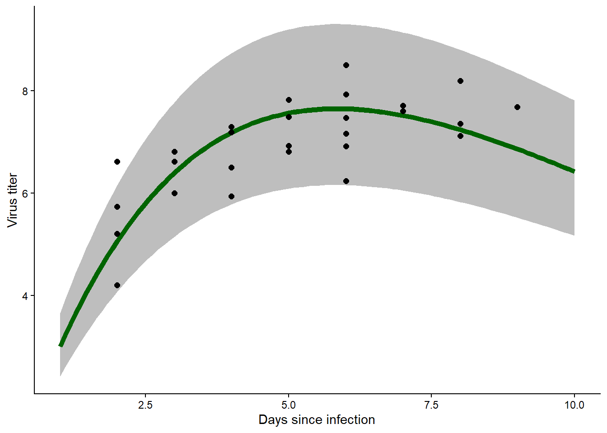
## x mean lwr upr
## 1 1.000000 3.000699 2.414999 3.649034
## 2 1.090909 3.222897 2.593827 3.919241
## 3 1.181818 3.437511 2.766551 4.180224
## 4 1.272727 3.644721 2.933315 4.432204
## 5 1.363636 3.844704 3.094265 4.675397
## 6 1.454545 4.037636 3.249538 4.910013
## 7 1.545455 4.223685 3.399273 5.136261
## 8 1.636364 4.403020 3.543604 5.354342
## 9 1.727273 4.575802 3.682661 5.564456
## 10 1.818182 4.742192 3.816573 5.766796
## 11 1.909091 4.902345 3.945467 5.961553
## 12 2.000000 5.056415 4.069465 6.148912
## 13 2.090909 5.204552 4.188687 6.329055
## 14 2.181818 5.346902 4.303252 6.502162
## 15 2.272727 5.483609 4.413276 6.668406
## 16 2.363636 5.614814 4.518870 6.827958
## 17 2.454545 5.740652 4.620147 6.980986
## 18 2.545455 5.861260 4.717213 7.127652
## 19 2.636364 5.976768 4.810176 7.268118
## 20 2.727273 6.087307 4.899138 7.402539
## 21 2.818182 6.193000 4.984202 7.531069
## 22 2.909091 6.293973 5.065466 7.653858
## 23 3.000000 6.390345 5.143027 7.771052
## 24 3.090909 6.482235 5.216982 7.882796
## 25 3.181818 6.569758 5.287421 7.989229
## 26 3.272727 6.653027 5.354437 8.090490
## 27 3.363636 6.732154 5.418119 8.186712
## 28 3.454545 6.807245 5.478554 8.278028
## 29 3.545455 6.878407 5.535826 8.364565
## 30 3.636364 6.945743 5.590019 8.446451
## 31 3.727273 7.009355 5.641215 8.523807
## 32 3.818182 7.069342 5.689493 8.596754
## 33 3.909091 7.125800 5.734931 8.665411
## 34 4.000000 7.178825 5.777606 8.729892
## 35 4.090909 7.228508 5.817591 8.790310
## 36 4.181818 7.274941 5.854961 8.846775
## 37 4.272727 7.318212 5.889786 8.899395
## 38 4.363636 7.358408 5.922136 8.948276
## 39 4.454545 7.395613 5.952079 8.993519
## 40 4.545455 7.429910 5.979682 9.035227
## 41 4.636364 7.461381 6.005010 9.073498
## 42 4.727273 7.490105 6.028127 9.108427
## 43 4.818182 7.516158 6.049095 9.140110
## 44 4.909091 7.539617 6.067975 9.168637
## 45 5.000000 7.560555 6.084827 9.194099
## 46 5.090909 7.579045 6.099708 9.216584
## 47 5.181818 7.595158 6.112675 9.236178
## 48 5.272727 7.608962 6.123785 9.252965
## 49 5.363636 7.620526 6.133092 9.267027
## 50 5.454545 7.629914 6.140648 9.278444
## 51 5.545455 7.637192 6.146505 9.287295
## 52 5.636364 7.642423 6.150715 9.293655
## 53 5.727273 7.645667 6.153326 9.297601
## 54 5.818182 7.646986 6.154387 9.299205
## 55 5.909091 7.646438 6.153946 9.298538
## 56 6.000000 7.644080 6.152049 9.295671
## 57 6.090909 7.639969 6.148740 9.290671
## 58 6.181818 7.634158 6.144064 9.283606
## 59 6.272727 7.626703 6.138063 9.274539
## 60 6.363636 7.617654 6.130781 9.263536
## 61 6.454545 7.607064 6.122257 9.250657
## 62 6.545455 7.594981 6.112533 9.235963
## 63 6.636364 7.581454 6.101647 9.219514
## 64 6.727273 7.566532 6.089637 9.201368
## 65 6.818182 7.550260 6.076541 9.181580
## 66 6.909091 7.532683 6.062395 9.160206
## 67 7.000000 7.513847 6.047235 9.137299
## 68 7.090909 7.493793 6.031096 9.112912
## 69 7.181818 7.472564 6.014011 9.087097
## 70 7.272727 7.450202 5.996013 9.059903
## 71 7.363636 7.426746 5.977135 9.031379
## 72 7.454545 7.402235 5.957409 9.001572
## 73 7.545455 7.376708 5.936864 8.970530
## 74 7.636364 7.350202 5.915532 8.938297
## 75 7.727273 7.322753 5.893441 8.904917
## 76 7.818182 7.294397 5.870619 8.870435
## 77 7.909091 7.265168 5.847096 8.834891
## 78 8.000000 7.235101 5.822897 8.798327
## 79 8.090909 7.204227 5.798050 8.760783
## 80 8.181818 7.172580 5.772579 8.722297
## 81 8.272727 7.140190 5.746512 8.682909
## 82 8.363636 7.107088 5.719871 8.642655
## 83 8.454545 7.073303 5.692680 8.601571
## 84 8.545455 7.038865 5.664965 8.559693
## 85 8.636364 7.003803 5.636746 8.517054
## 86 8.727273 6.968142 5.608046 8.473689
## 87 8.818182 6.931911 5.578886 8.429630
## 88 8.909091 6.895136 5.549289 8.384908
## 89 9.000000 6.857841 5.519274 8.339556
## 90 9.090909 6.820052 5.488861 8.293602
## 91 9.181818 6.781793 5.458070 8.247077
## 92 9.272727 6.743088 5.426919 8.200009
## 93 9.363636 6.703959 5.395428 8.152426
## 94 9.454545 6.664429 5.363614 8.104355
## 95 9.545455 6.624520 5.331494 8.055823
## 96 9.636364 6.584252 5.299086 8.006855
## 97 9.727273 6.543647 5.266407 7.957477
## 98 9.818182 6.502724 5.233471 7.907712
## 99 9.909091 6.461503 5.200296 7.857584
## 100 10.000000 6.420003 5.166896 7.807118predict_myxRicker2(MLE,H,prediction = F)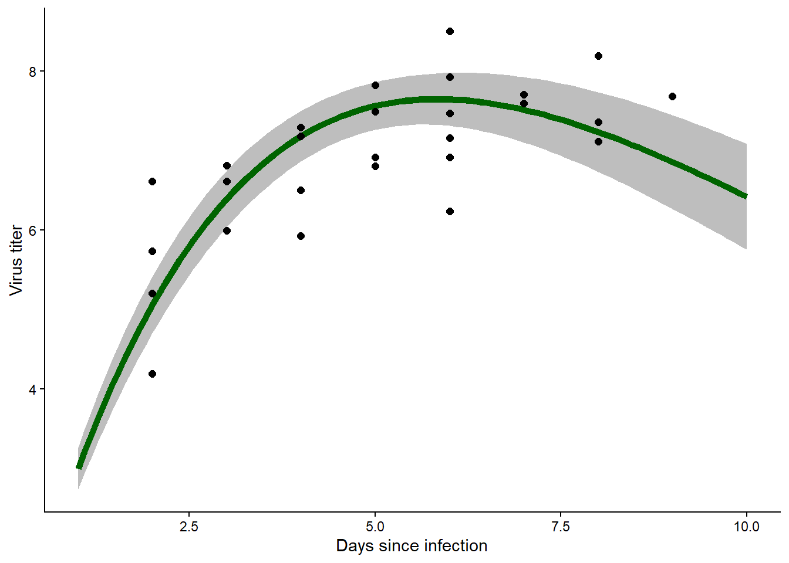
## x mean lwr upr
## 1 1.000000 3.000699 2.739187 3.262211
## 2 1.090909 3.222897 2.947027 3.498768
## 3 1.181818 3.437511 3.148583 3.726438
## 4 1.272727 3.644721 3.343981 3.945460
## 5 1.363636 3.844704 3.533342 4.156067
## 6 1.454545 4.037636 3.716786 4.358486
## 7 1.545455 4.223685 3.894431 4.552940
## 8 1.636364 4.403020 4.066391 4.739648
## 9 1.727273 4.575802 4.232779 4.918824
## 10 1.818182 4.742192 4.393706 5.090678
## 11 1.909091 4.902345 4.549277 5.255413
## 12 2.000000 5.056415 4.699600 5.413231
## 13 2.090909 5.204552 4.844776 5.564329
## 14 2.181818 5.346902 4.984905 5.708899
## 15 2.272727 5.483609 5.120087 5.847132
## 16 2.363636 5.614814 5.250416 5.979211
## 17 2.454545 5.740652 5.375985 6.105320
## 18 2.545455 5.861260 5.496884 6.225636
## 19 2.636364 5.976768 5.613203 6.340334
## 20 2.727273 6.087307 5.725025 6.449588
## 21 2.818182 6.193000 5.832436 6.553565
## 22 2.909091 6.293973 5.935514 6.652431
## 23 3.000000 6.390345 6.034339 6.746351
## 24 3.090909 6.482235 6.128985 6.835485
## 25 3.181818 6.569758 6.219525 6.919991
## 26 3.272727 6.653027 6.306030 7.000025
## 27 3.363636 6.732154 6.388568 7.075739
## 28 3.454545 6.807245 6.467204 7.147285
## 29 3.545455 6.878407 6.542001 7.214813
## 30 3.636364 6.945743 6.613020 7.278467
## 31 3.727273 7.009355 6.680318 7.338393
## 32 3.818182 7.069342 6.743952 7.394732
## 33 3.909091 7.125800 6.803977 7.447624
## 34 4.000000 7.178825 6.860443 7.497206
## 35 4.090909 7.228508 6.913403 7.543613
## 36 4.181818 7.274941 6.962906 7.586976
## 37 4.272727 7.318212 7.009001 7.627423
## 38 4.363636 7.358408 7.051736 7.665079
## 39 4.454545 7.395613 7.091161 7.700065
## 40 4.545455 7.429910 7.127323 7.732498
## 41 4.636364 7.461381 7.160273 7.762489
## 42 4.727273 7.490105 7.190063 7.790146
## 43 4.818182 7.516158 7.216746 7.815570
## 44 4.909091 7.539617 7.240377 7.838856
## 45 5.000000 7.560555 7.261015 7.860095
## 46 5.090909 7.579045 7.278720 7.879371
## 47 5.181818 7.595158 7.293556 7.896759
## 48 5.272727 7.608962 7.305592 7.912333
## 49 5.363636 7.620526 7.314895 7.926156
## 50 5.454545 7.629914 7.321539 7.938289
## 51 5.545455 7.637192 7.325598 7.948786
## 52 5.636364 7.642423 7.327149 7.957696
## 53 5.727273 7.645667 7.326271 7.965064
## 54 5.818182 7.646986 7.323041 7.970931
## 55 5.909091 7.646438 7.317542 7.975334
## 56 6.000000 7.644080 7.309852 7.978309
## 57 6.090909 7.639969 7.300051 7.979886
## 58 6.181818 7.634158 7.288219 7.980098
## 59 6.272727 7.626703 7.274435 7.978971
## 60 6.363636 7.617654 7.258774 7.976534
## 61 6.454545 7.607064 7.241314 7.972813
## 62 6.545455 7.594981 7.222127 7.967834
## 63 6.636364 7.581454 7.201287 7.961622
## 64 6.727273 7.566532 7.178862 7.954202
## 65 6.818182 7.550260 7.154922 7.945598
## 66 6.909091 7.532683 7.129532 7.935835
## 67 7.000000 7.513847 7.102756 7.924937
## 68 7.090909 7.493793 7.074657 7.912928
## 69 7.181818 7.472564 7.045295 7.899834
## 70 7.272727 7.450202 7.014726 7.885677
## 71 7.363636 7.426746 6.983008 7.870483
## 72 7.454545 7.402235 6.950194 7.854276
## 73 7.545455 7.376708 6.916336 7.837080
## 74 7.636364 7.350202 6.881485 7.818918
## 75 7.727273 7.322753 6.845690 7.799816
## 76 7.818182 7.294397 6.808996 7.779797
## 77 7.909091 7.265168 6.771451 7.758886
## 78 8.000000 7.235101 6.733096 7.737105
## 79 8.090909 7.204227 6.693976 7.714479
## 80 8.181818 7.172580 6.654129 7.691030
## 81 8.272727 7.140190 6.613596 7.666783
## 82 8.363636 7.107088 6.572415 7.641760
## 83 8.454545 7.073303 6.530622 7.615984
## 84 8.545455 7.038865 6.488253 7.589478
## 85 8.636364 7.003803 6.445342 7.562264
## 86 8.727273 6.968142 6.401922 7.534363
## 87 8.818182 6.931911 6.358025 7.505798
## 88 8.909091 6.895136 6.313682 7.476589
## 89 9.000000 6.857841 6.268923 7.446759
## 90 9.090909 6.820052 6.223777 7.416328
## 91 9.181818 6.781793 6.178271 7.385316
## 92 9.272727 6.743088 6.132433 7.353743
## 93 9.363636 6.703959 6.086289 7.321630
## 94 9.454545 6.664429 6.039864 7.288995
## 95 9.545455 6.624520 5.993181 7.255859
## 96 9.636364 6.584252 5.946265 7.222239
## 97 9.727273 6.543647 5.899139 7.188155
## 98 9.818182 6.502724 5.851824 7.153624
## 99 9.909091 6.461503 5.804341 7.118664
## 100 10.000000 6.420003 5.756712 7.083294Exercise 4.1c (optional extra credit!): Profile Likelihood confidence interval
In this optional (extra credit) exercise, you will add an option to construct profile likelihood confidence intervals instead of using the normal approximation (using the Hessian matrix, above). parameter using repeated calls to the "optim()" function.
To do this you will need to modify your likelihood functions and "optim()" commands to estimate only the parameters other than the one you are trying to get a CI for (because you’ll be fixing that parameter at many values on either side of the MLE).
Again, you can assume that there is a dataframe in your environment named 'myxdat' with columns named 'days' and 'titer' that contain the data.
Since this is for extra credit, I am not giving you a suggested algorithm here. Take this as a fun challenge! You might start by writing down some psuedocode to think through the problem before you start coding. Try to do it without help from a chatbot. If you do use a chatbot, ask it to help find solutions using base R. This course is about building custom algorithms so it's kind of cheating if you use higher level functions that "hide" the underlying algorithms.
- input:
- mle = named vector containing the maximum likelihood values for the params (length 3: a and b params from the Ricker model [see below], and the shape parameter of the Gamma distribution)(names should be "a","b", and "shape")
- H = the hessian matrix obtained from optimizing the negative-log-likelihood function (i.e., from 'optim()' with 'hessian=T')
- nll = the minimum negative-log-likelihood at the MLE
- profile = a logical T/F indicating whether or not to use the profile likelihood method. If not, the function should return confidence intervals using the normal approximation with the hessian matrix.
suggested algorithm:
Up to you!- return:
- a matrix: each row is a parameter (in order: a, b, and shape) and there are three columns: first, the mle values, second, the lower bound of the confidence interval, and third, the upper bound of the confidence interval.
Finally, test the function and compare the profile likelihood method with the hessian method:
CI_myxRicker2(MLE,H,MinNLL,profile=T,alpha=0.05)## mle lb ub
## [1,] 3.5614933 3.2060577 3.9711720
## [2,] 0.1713346 0.1514887 0.1910433
## [3,] 90.6790545 50.5185915 147.3398345CI_myxRicker2(MLE,H,MinNLL,profile=F,alpha=0.05)## mle lwr upr
## a 3.5614933 3.1888098 3.9341767
## b 0.1713346 0.1521071 0.1905622
## shape 90.6790545 42.3963889 138.9617202---------------End of lab 3------------------------